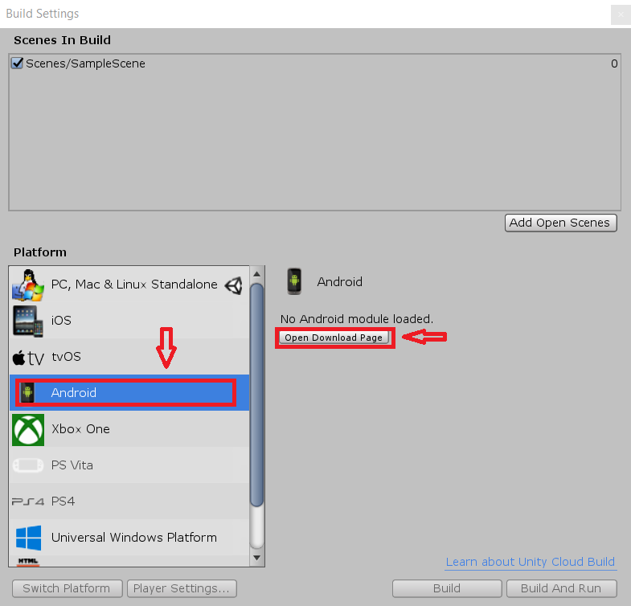
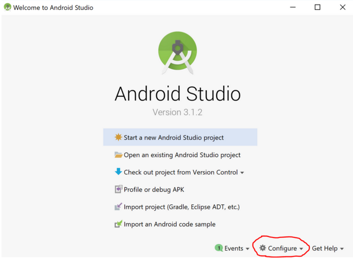
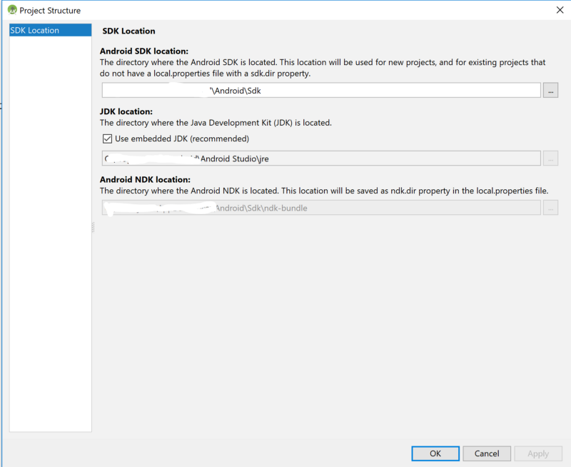
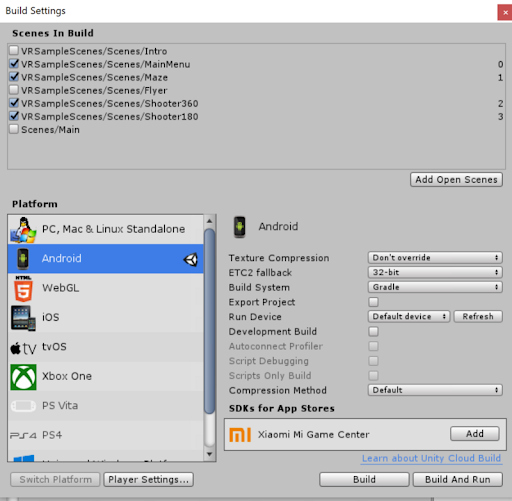
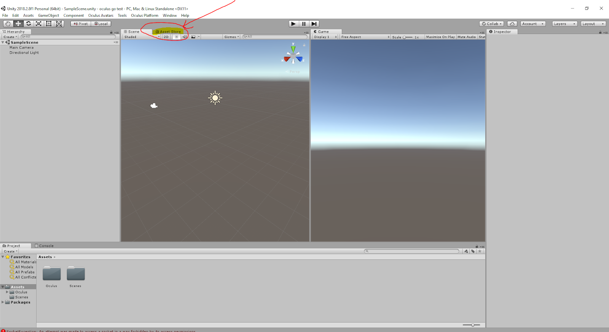
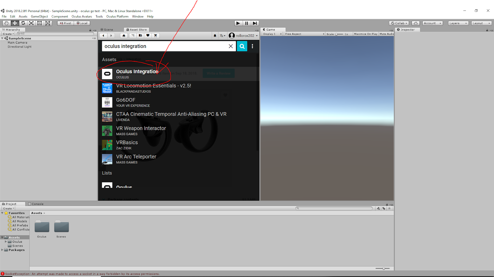

CS11: Pre-Lab
Written by Khoi Le, Connor Settle, Ethan Aldrich
Setting up the Oculus Go dev environment
(adapted from this Medium article )
- Check Documentation (highly recommended) and Android Build Support when installing
- (Khoi installed UWP, Vuforia, WebGL, and Windows for other projects. If you’re interested, ask Khoi about it!)

- If you've already downloaded Unity sometime in the past, but didn't check the Android Build Support when you installed, you can enable it fairly easily. First, open any Unity project, and go to File -> Build Settings. From there, choose Android. It should say "No Android module loaded." Click Open Download Page.
- 
- Run the program that was downloaded. You will have to exit out of Unity during the installation, just do so and it will continue automatically. Once the installer is done, you can restart Unity and should be able to build for Android.
- On the welcome screen, click Configure on the bottom right
- 
- Click SDK Manager
- Under the SDK Platforms tab ensure API levels 21-27 are checked, if not, check them and wait for them to download
- On the SDK Tools tab, check the box next to Show Package Details in the lower right corner of the window.
- Under Android SDK Build-Tools 28-rc2, make sure 27.0.3 is checked DO NOT CHECK ANYTHING THAT HAS “rc” in it (28.0.2 might mess with your Gradle build).
- Also under SDK Tools make sure the following are checked:
- LLDB
- Android SDK Platform-Tools
- Android SDK Tools 25.2.5
- NDK
- Click Apply. This will install everything you selected above on the SDK tabs.
- Back on the welcome screen, click Configure on the bottom right, and then Project Defaults > Project Structure
- Here you’ll find the file paths for the SDK, JDK and NDK. Copy these down in a text editor; we’ll need these shortly
- 
> Set Environment Variables
Windows:
- On your Windows machine, search for “Environment Variables”. This should take you to Control Panel > System Properties. Go to the Advanced Tab, then to the Environment Variables button in the lower right.
- In the top section, set/modify/add the following variables:
- Set the environment variable JAVA_HOME to the JDK location.
- Set the environment variable ANDROID_HOME to the Android SDK location.
- Set the environment variable ANDROID_NDK_HOME to the Android NDK location.
- Add the JDK tools directory to your PATH, ie C:\Program Files\Android Studio\jre\bin
- One of the errors I kept running into when building for Android in Unity was “Unable to list target platforms”. It’s vague and frustrating. Here’s how to fix it (taken from this stackoverflow post):
- Delete android sdk “tools” folder : [Your Android SDK root]/tools -> tools
- Download SDK Tools
- Extract that to Android SDK root
- ADB should be automatically installed through Android Studio. If not, check the SDK Manager. Download ADB Oculus Go tools here (WINDOWS ONLY)
Mac:
- On your Mac machine, open Terminal.
- Type “touch ~/.bash_profile”
- Type “open ~/.bash_profile”, this will open the file in TextEdit
- Insert the following lines into the file:
- export JAVA_HOME=[JDK Path]
- export ANDROID_HOME=[Android SDK Path]
- export ANDROID_NDK_HOME=[Android NDK Path]
- export PATH=$PATH:$ANDROID_HOME/bin
- export PATH=$PATH:$ANDROID_SDK/tools:$ANDROID_SDK/platform-tools:$ANDROID_NDK_HOME
- Save the file
- Close the previous terminal window and open a new one
- ADB is automatically installed as well
> Prep Unity
- Open Unity and sign in if you are prompted. Yes fill out that darn survey.
- Open Unity and create a new project
- Once your new (or existing) project opens, we need to set it to build for Android.
- Go to File > Build Settings
- Ensure Android support is installed by selecting Android and then clicking Switch Platform. (If you did not add Android support when you first installed Unity, you will have to do so now, then restart Unity).
- 
- Close the Build Settings window.
- Go to Edit > Preferences
- Click on the External Tools tab
- Scroll down to the Android section
- Set the SDK, JDK and NDK paths to what you copied to the text file in Step 4.
- Close the Preferences window.
- Go to the Asset Store
- 
- Look up Oculus Integration.
- 
- Download and import.
- Go to Edit > Project Settings > Player
- Click Player Settings > XR Settings > Virtual Reality Supported
- Add Oculus to the SDKs list
Feel free to play around with Unity, but we’ll be going through it together in class!